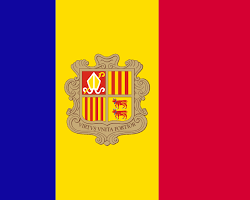

Desman des Pyrénées et prises d'eau de centrale hydroélectrique
Analyse critique des prescriptions existantes et proposition d'un double critère de protection proportionné

Bureau d'études hydraulique — Pau, Pyrénées-Atlantiques
Cette page donne accès aux versions linguistiques de la note technique Eau-Energie consacrée au Desman des Pyrénées (Galemys pyrenaicus) et aux prises d'eau de centrales hydroélectriques haute chute.
Les deux versions sont publiées en accès ouvert, avec PDF local, DOI Zenodo et notice HAL.
Analyse critique des prescriptions existantes et proposition d'un double critère de protection proportionné

Anàlisi crítica de les prescripcions existents i proposta d'un doble criteri de protecció proporcionat
Versió catalana — Andorra / Pirineus
Mots-clés / Paraules clau : Desman des Pyrénées ; Galemys pyrenaicus ; almesquera dels Pirineus ; prise d'eau hydroélectrique ; presa d'aigua hidroelèctrica ; centrale haute chute ; central d'alta caiguda ; plan de grille ; pla de reixa ; vitesse d'aspiration ; velocitat d'aspiració ; colmatage ; obturació ; entrefer ; separació entre barrots ; Loi sur l'Eau ; Llei de l'Aigua ; proportionnalité ; proporcionalitat ; PNA Desman ; biodiversité pyrénéenne ; Andorra ; Pirineus.